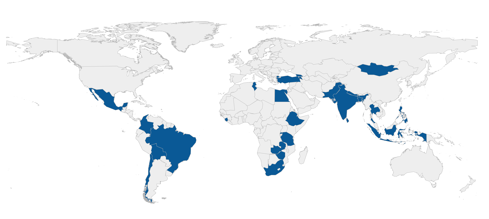

Introduction to the GLD#
What is GLD?#
The Global Labor Database (GLD) is part of the World Bank initiatives to harmonize labor force surveys and household surveys with a relevant labor module. Its mission is to create an open and transparent harmonization with sufficient background information to allow data analysts to use, alter, and expand the harmonization. In this sense, background information goes beyond code, questionnaires, and reports, and includes documenting survey details learned during harmonization which are not recorded elsewhere. An example of this documenting changes to the currency or the administrative divisions.
The GLD aims to be an open-source database, meaning that as much information should be accessible to as many people as possible. It also strives to be transparent, making all steps that create the harmonization traceable, from raw data acquisition to harmonized variable coding. Hence, all steps of the harmonization process are documented and made available, including the survey documentation, code and notes that allow users to fully comprehend the survey design and the choices made in the harmonization. The availability of the codes and documentation enables users to customize and add variables not in the GLD harmonization. Most harmonization efforts provide users with a “take it or leave it” option, but the GLD’s open and transparent approach allows users to trace and deviate from the standard harmonization at any point, giving them a head start regardless of where they wish to jump in.
Finally, the GLD follows up and expands on the previous initiative to harmonized household surveys, the International Income Distribution Database (I2D2). The I2D2 was superseded by the Global Monitoring Database (GMD), which however focused on household budget surveys and did not harmonize labor force surveys. The GLD was created to remedy this gap in the survey type coverage and complement it, with a stronger focus on labor market information through an expanded dictionary and more rigorous validation of labor indicators.
What is the objective of GLD?#
Labor force surveys represent a critical data source to generate key labor market indicators disaggregated by individual characteristics that policy makers monitor, target, and evaluate. Appended across time and space, they are used for comparison and benchmarking. The objective of GLD is to make the process of producing these estimates easier, traceable, and reproducible for World Bank staff and researchers worldwide.
One major issue when generating survey-based indicators is the cross-country comparability and the time-consuming process of harmonization, which requires reading both data files and survey materials in detail to understand what to code and how, a structured and consistent harmonization methodology as well as many steps of validation.
The first objective of GLD is thus to create a database of harmonized surveys with comprehensive and reliable labor market information that can be used in analytical work for cross-country and over time comparisons. By creating a harmonized output, this database can be fed into other products that automate analytical processes like country level jobs diagnostics.
The second objective of GLD is to allow users to go beyond the standard dataset, to support them in delving deeper into their analyses and comparisons to find deeper insights. GLD empowers such a customized approach by providing all codes and technical reports, as well as documenting all intricacies of the survey discovered during harmonization so that users can focus on answering the questions they need answering, not on figuring out in what year an administrative boundary was changed and how the sample size was thus affected.
Who is the intended audience?#
Target users of GLD include researchers, data analysts and practitioners in the international development community, statistical offices, ministries of labor, of economy and planning and other relevant government agencies analyzing labor market data to monitor and analyze labor market outcomes, and to inform the design of labor policies. These users can exploit two kinds of uses of the GLD.
The first use is the “as-is” harmonization. This refers to the user taking the harmonized data files as prepared by the data team and using those variables (or combinations thereof) for their analysis.
The second use is the “amended” or “hacked” harmonization. This refers to the user wanting to go beyond the prepared harmonization. This may be, for example, because they are interested in another specific variable from the survey, present in the questionnaire but not harmonized as not common in most surveys. In this case, the user can still utilize the harmonization do file to standardize most variables (as concepts like education level or labor status are likely still going to be relevant) but in addition add other ones. This use entails editing the harmonization code and/or adding to it at specific points to serve the users purpose without them needing to process the survey entirely.
What are the principles guiding GLD?#
GLD follows a set of principles to guide its development and maintenance. In this introduction we focus on (a) GLD coverage and expansion, (b) transparency and data access, (c) data quality and validation.
GLD coverage and expansion#
As of April 2024, the GLD holds 345 surveys from 24 countries (1 high-income countries, 9 upper medium-income, 11 lower middle-income, and 9 low-income countries). Table 1, gives an overview of the countries (by three digit ISO code), the number of surveys and years covered in GLD. Figure 1, below the table, shows the location of the countries in GLD.
Table 1 - GLD coverage by country, number of surveys, and time range (April 2024)
Here’s the data converted into a markdown table with centered alignment:
Country |
Number of surveys |
Range of years |
|---|---|---|
ARM |
9 |
2014 - 2022 |
BGD |
5 |
2005 - 2016 |
BOL |
6 |
2015 - 2021 |
BRA |
37 |
1981 - 2022 |
CHL |
13 |
1990 - 2017 |
COL |
23 |
1996 - 2021 |
EGY |
14 |
2006 - 2019 |
ETH |
4 |
1999 - 2021 |
GEO |
6 |
2017 - 2022 |
IDN |
30 |
1989 - 2019 |
IND |
15 |
1983 - 2022 |
LKA |
23 |
1992 - 2021 |
MEX |
16 |
2005 - 2020 |
MNG |
17 |
2002 - 2022 |
NPL |
3 |
1998 - 2017 |
PAK |
15 |
1992 - 2020 |
PHL |
23 |
1997 - 2019 |
RWA |
5 |
2017 - 2021 |
SLE |
1 |
2014 - 2014 |
THA |
36 |
1985 - 2021 |
TUR |
20 |
2000 - 2019 |
TUN |
15 |
1997 - 2017 |
TZA |
6 |
2000 - 2020 |
ZAF |
13 |
2008 - 2020 |
ZMB |
9 |
2008 - 2022 |
ZWE |
5 |
2011 - 2022 |
Figure 1 - Map of the world with the GLD countries highlighted (april 2024)

Note: Boundaries shown on this map are not authoritative and should not be considered as an endorsement by The World Bank.
The initial choice of countries was driven by the availability of multiple LFS over time for the same countries. Thereafter, the GLD team has established selection guidelines to try to balance the GLD country coverage across income groups and regions, and to keep the GLD updated with the latest surveys.
Ensuring that the GLD is updated means to harmonize latest surveys once they become available for each country in the GLD. In general, we view a survey as in date if it is from the previous four years (e.g., from at least 2020 in 2024). Thus, both between regions and within regions, the choice in surveys to add to GLD should reflect an effort to not just be present at all income levels but to have up to date surveys for all.
However, acquiring new surveys is mostly determined by data availability, that is, whether it is possible to obtain new data or whether the National Statistical Office (NSO) of countries do not permit the sharing of survey data. Hence, if NSOs of a region share very little of their data, the GLD’s imbalance due to a lack of surveys would not be correctable. Similarly, if NSOs do not run or only seldomly run a labor force survey, their countries’ GLD entry would missing or small despite our best efforts.
Transparency and data access#
GLD is designed to be as accessible and transparent as possible. Every step of our harmonization should be transparent and traceable. In addition, all the outputs produced by the GLD team (harmonization code and documentation of survey details, choices made during harmonization) are shared freely to all on GitHub, a web platform for collaborative software development and version control.
Access to the raw and harmonized microdata is restricted on a survey-by-survey basis in accordance with data license regulations. These limitations stem primarily from data privacy mandates issued by the National Statistics Offices, alongside other pertinent considerations. Such restrictions are imperative to ensure compliance with legal frameworks governing the confidentiality and usage of sensitive survey data. Adherence to these protocols not only upholds ethical standards but also safeguards the integrity and confidentiality of the information contained within the database.
GLD data is stored on a server managed by the GLD team. The team aims to use data sources we can share at least with World Bank colleagues whenever possible. Data is also accessible via datalibweb and the microdata library. Currently all GLD surveys are accessible to all World Bank staff except for data from Egypt, where the publisher of the data has requested that raw data (and thus harmonized data) be only accessed via their portal. More details on this in section 2.2 Data storage platforms and access rules section.
Data quality and validation#
Central to the GLD objective of being a reliable source for cross country comparisons and benchmarking is ensuring data are of the highest quality. Only then is it possible to leverage large datasets and use GLD as an input into automated analytical workflows.
To validate the harmonization, the GLD team has three main tools. The first is the validation done with country office colleagues and NSO staff when harmonizing. GLD harmonizers are in touch with relevant colleagues with domain knowledge to understand the survey (knowledge they can then document and share) and ensure their mapping of variables from the raw data to the harmonized variables is sensible.
Once the harmonization is finalized, there are two automated quality check procedures. The first checks the survey for integrity and coherence with external sources (e.g., is the calculated labor force participation in line with what ILO, WDI report). The second checks a series of surveys in a country over time to detect any unexpected jumps in the series.
Finally, via direct exchange with the GLD team or on the online GitHub platform, users can alert the team of issues in the harmonization that had made it through, nonetheless. A process of updating the harmonization then kicks in to try to correct any issues as quickly as possible. For a more detailed description of all quality checks see section 4. Validation and quality checks.
Complementarities with similar data efforts#
Within the World Bank, there are other two harmonization initiatives: (1) the I2D2 harmonization of both LFS and household surveys which has been active for more than a decade and has been recently discontinued; and (2) the Global Monitoring Database (GMD) which is harmonizing only household budget surveys used for poverty and inequality analysis primarily.
The GMD thus includes variables on household consumption and calculates certain income and consumption aggregates that are not present in GLD. On the other hand, GLD has more detailed labor variables, especially providing (wherever possible) industry and occupation information using ISIC and ISCO codes to the fullest depth possible. As both use a common set of variables, both can be used as inputs to automated analytical tools. This is the case, for example for the Jobs Indicators database (JOIN), which reads in data from GMD, GLD, and I2D2 to create country indicators. Moreover, the GLD offers a larger set of migration variables in its data dictionary than the GMD.
Finally, in trying to strike a balance between harmonization and information in the raw data, the GLD also stores more “original” variables from the raw data than GMD (or I2D2). That is, there are more variables that directly provide users with the information as is to be found in the survey. For example, in addition to occup and occup_isco (occupation information by 10 main categories or the ISCO codes), occup_orig contains the occupation information found in the survey. Thus, users can deviate from our codes without need to redo the harmonization and evaluate how the mapping from raw to harmonized variable was done directly.
Similarly, the ILO harmonizes LFSs to generate indicators published on the ILOSTAT data platform, though the underlying harmonized microdata and relative codes are not made public as in GLD. The ILOSTAT platform provides users with an extensive set of indicators, not just on labor markets, but also on other socioeconomic and sociodemographic information for more than 180 countries accessible in the ILO Survey Catalogue. However, the microdata are only accessible to ILO staff. Moreover, no harmonization codes are made available and thus what the user can access are indicators at the national level. Hence, while ILOSTAT is a great resource to obtain country level indicators for the most common topics, GLD can complement this via allowing users going deeper and leveraging the full microdata, running regressions, or calculating indicators at sub-national level.
Sustainability#
Maintaining the level of detail provided by the GLD is a significant undertaking that requires a serious investment of resources. The World Bank is the right organization to house such an effort due to the externalities generated by a public effort to create accessible data.
To maintain the costs of the effort low and ensure the sustainability of the project as it scales and requires more management, two things are necessary: 1) a strong collaboration with regional data teams and 2) the creation of a community of users on GitHub, a web platform for collaborative software development and version control, initially among World Bank staff with the objective to expand to all users through a collaborative yet still curated approach.